Project / 10
Southeast Austin, Texas
10
Round Water Feature and Two Steel Fire Pits
Scroll
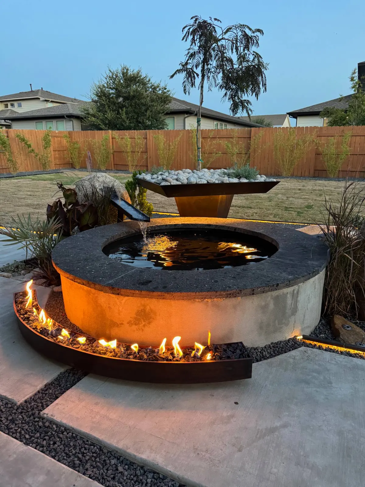

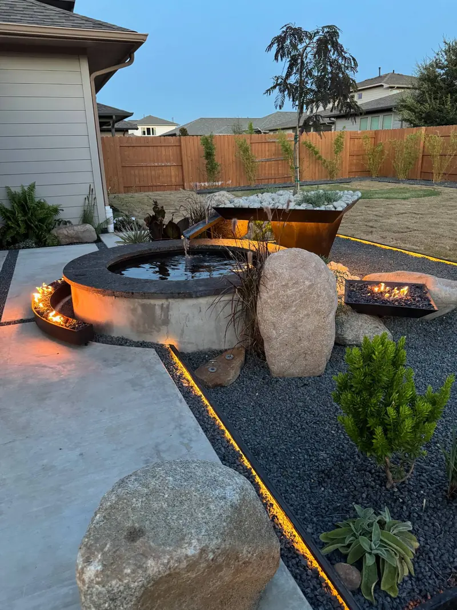
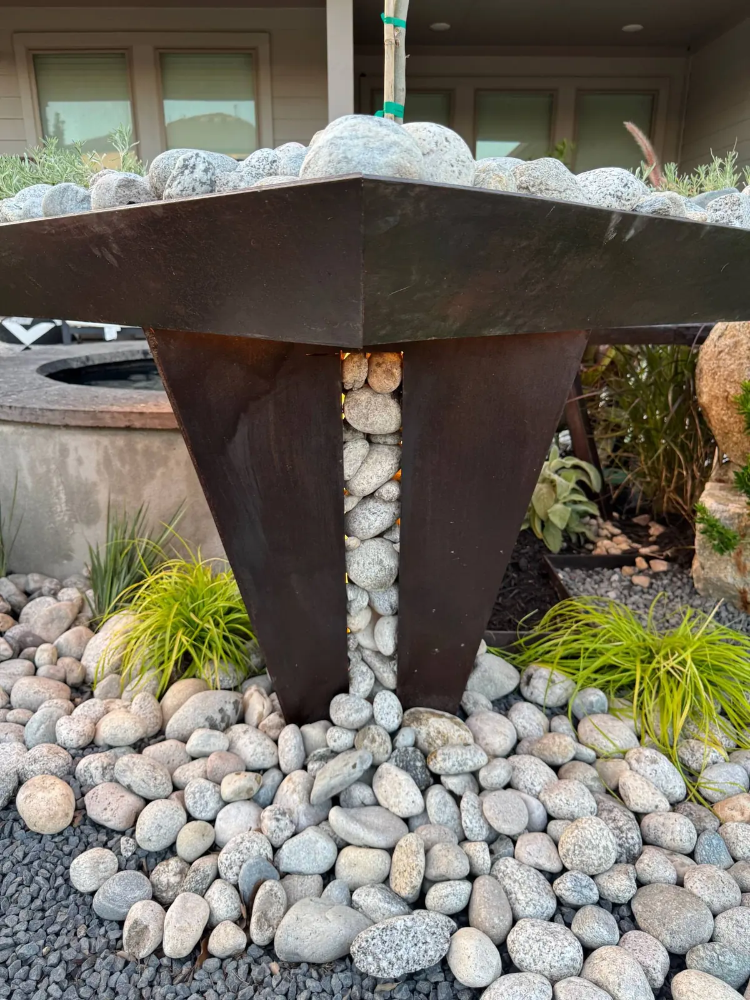
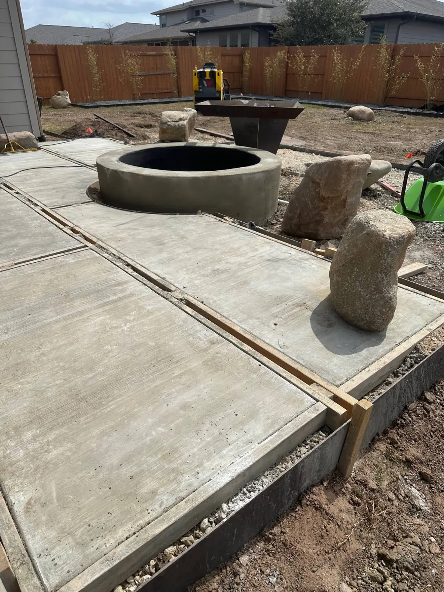
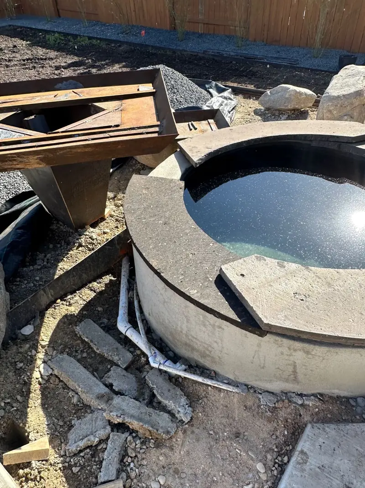
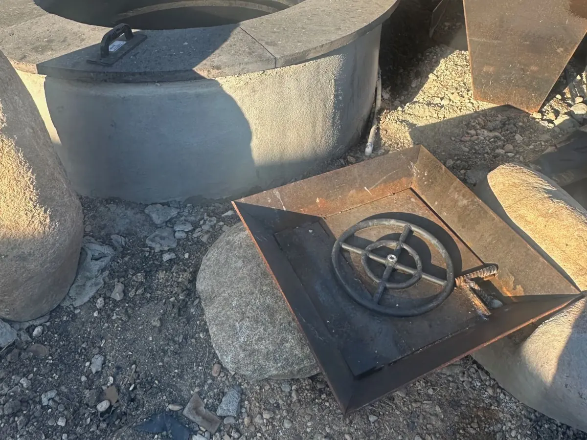
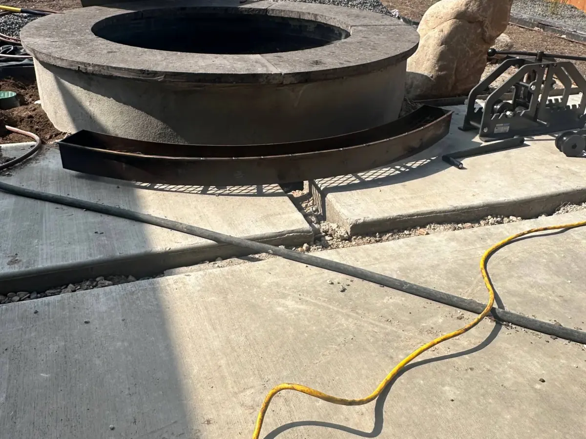
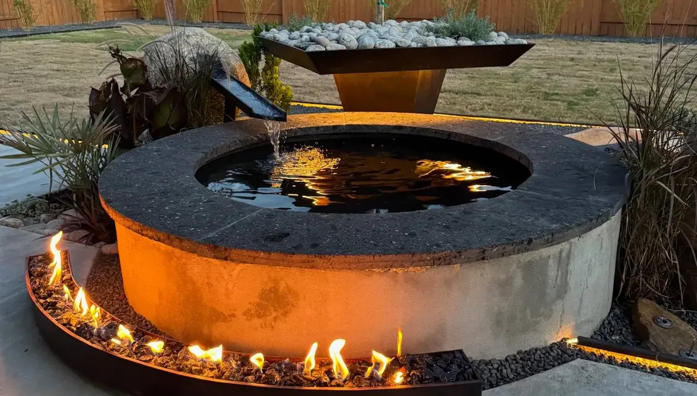
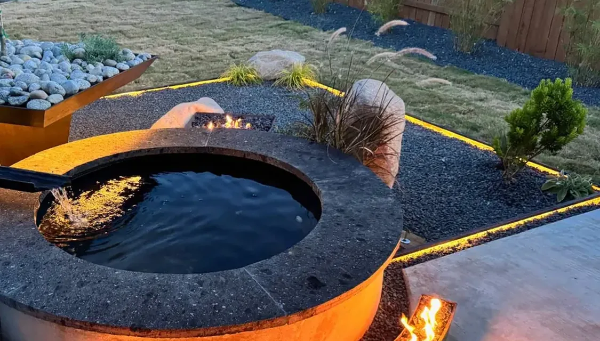
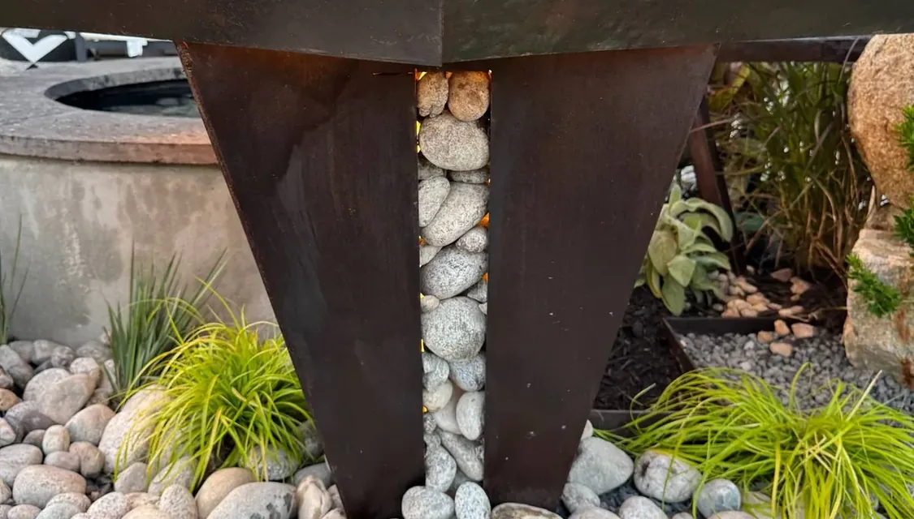
The inside of the pool is plaster, finished black. Black water works like a dark mirror: it reflects the flames in front of it and the sky above it. A sand pool filter keeps the water clear.
The second fire pit burns between two boulders behind the pool, in a court of dark gravel. Steel edging holds the gravel, and a light strip runs along the steel, so the outline of the court shows at night.
A square steel tray on a tapered base, cut from steel plate and welded on site. The slot in the base is packed with river rock, with a light behind the rock. The steel has weathered to a deep brown, the same tone as the floating fire pit.
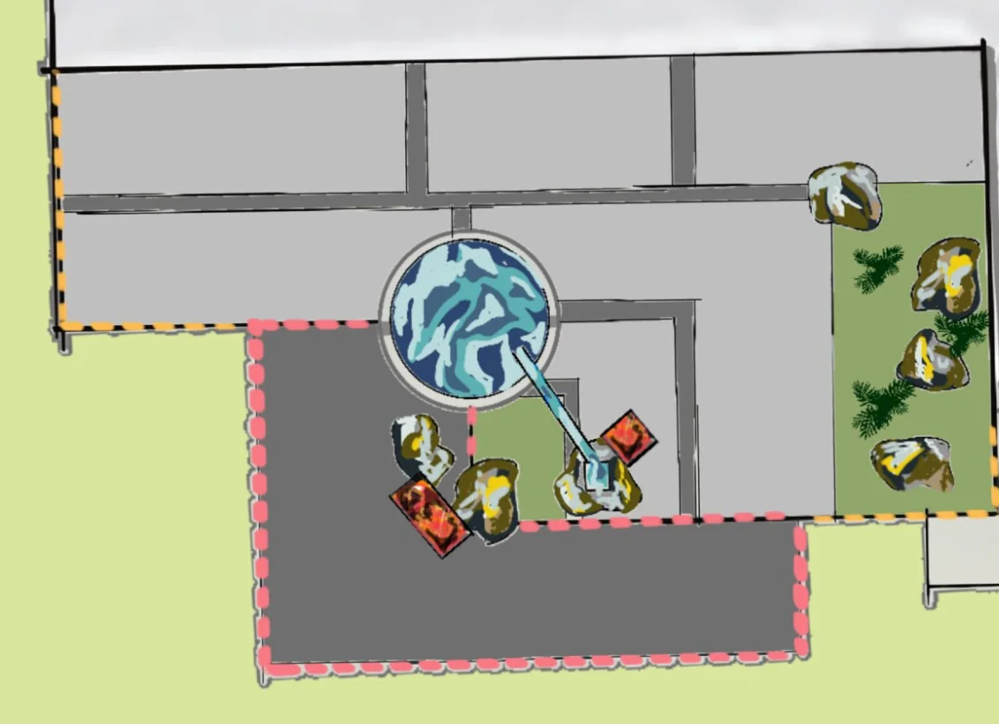
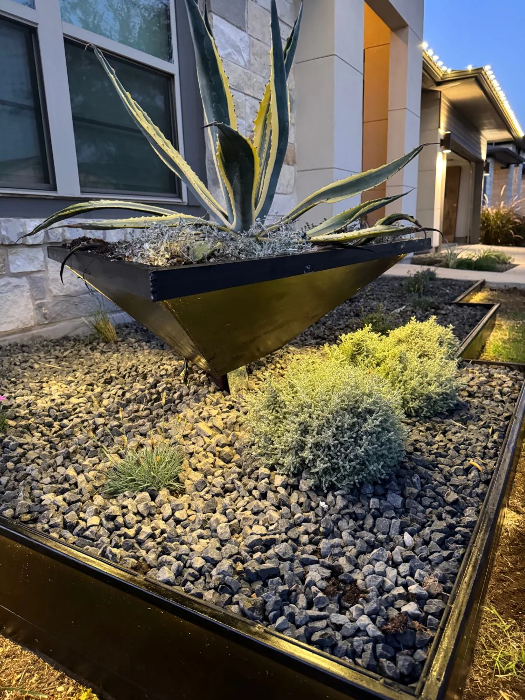